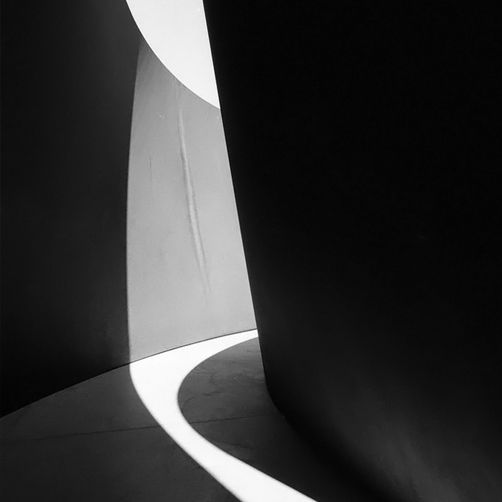
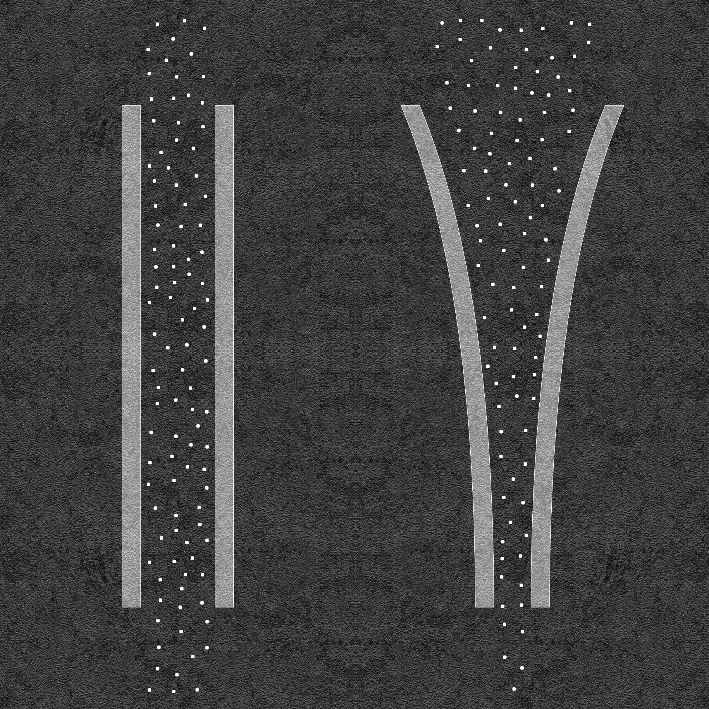
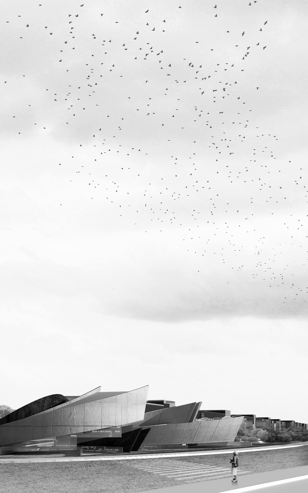
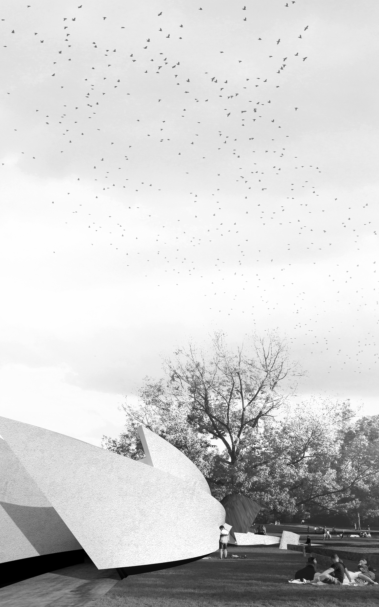
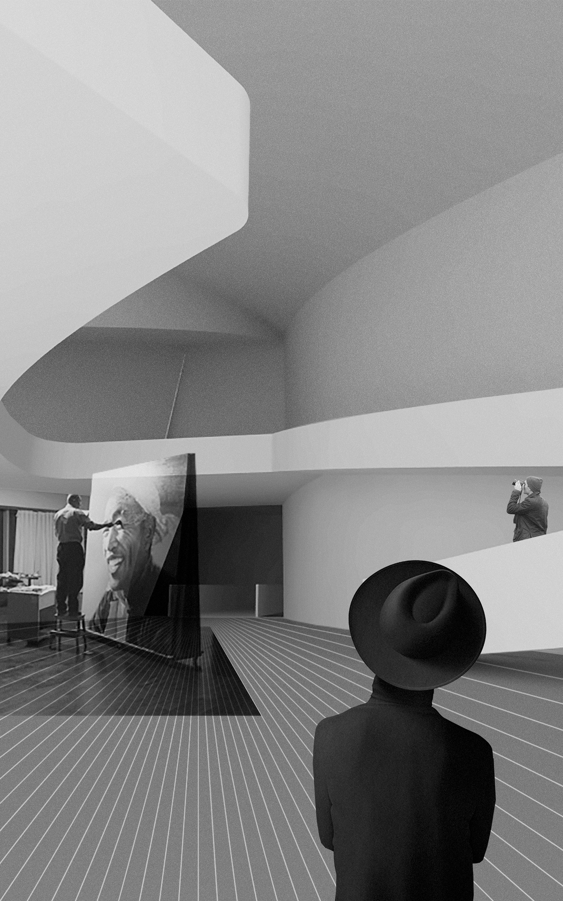

PERCEPTION
Contemporary Museum Design
Site: Ming City Wall Ruins Park, Beijing, China

CONCEPTION
Different spatial forms have different guiding effects to human behavior pattern. When people face the space enclosed by two parallel walls, they will act randomly since it does not have any clear guiding effect. In contrast, when people pass through space enclosed by curves which changes from narrow to relatively open, the space will present an obvious guiding effect.


